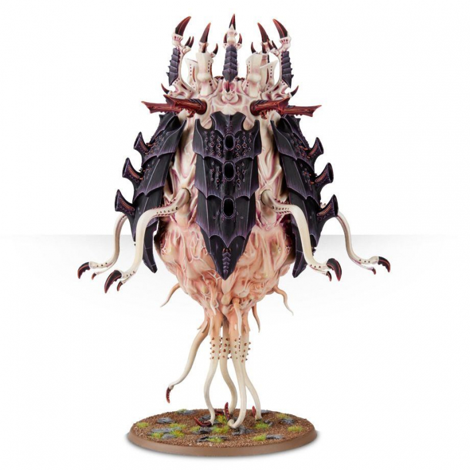

Tyrannocyte Warhammer 40000
Описание
Извергаясь из жерл висящих на низкой орбите кораблей улья, тираноцит (tyrannocyte) устремляется к земле с ужасающим ревом. Когда он врезается в почву, гигантский живот этого создания лопается и выпускается наружу тварей, которых он доставляет с таким "комфортом".
Когда спороцист (sporocyst) приземляется на планету, он раскрывает защитный хитиновый кокон и начинает вгрызаться в землю, как клещ в открытый участок кожи. Когда же он укрепляется, то во все стороны расползаются многочисленные микроорганизмы, отравляющие атмосферу планеты и гибельные для тех, кто их вдыхает.
Миколидные споры (mucolid spores) перемещаются короткими, резкими движениями, и при контакте с противником взрываются, причиняя жертве неимоверные повреждения. Одна мина может вывести из строя десяток солдат, но группы споровых мин опасны даже для тяжелой штурмовой авиации.
Панцирь тираноцита может быть собран вокруг туши, либо раскрыт наподобие парашюта, изображая момент приземления бестии на планету. Он (равно как и спороцист) вооружен пятью смертоплюями (deathspitters), которые можно сменить на шипастые душители (barbed stranglers) или ядокристаллические пушки (venom cannons).
Комплектация
124 детали для сборки 1 модели тираноцита, спороциста или миколидной споры
6 моделей споровых мин
6 круглых 25-мм. подставок
1 круглая 40-мм. подставка
1 круглая 100-мм. подставка
Цена
4 200 Р